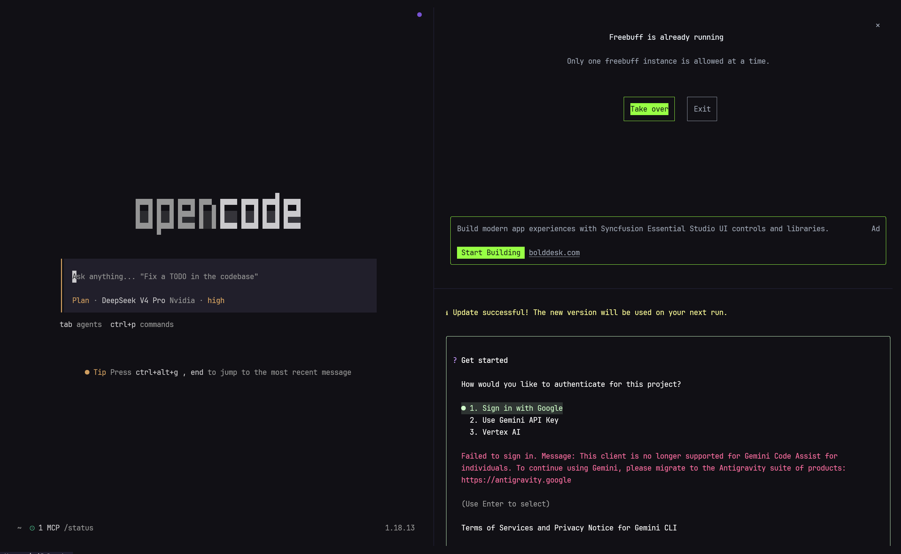

MANDA es un fork profundamente personalizado de WezTerm: configuración por defecto sin fricción, una suite de shell seleccionada y un asistente de IA integrado con ajustes para los proveedores que ya usas.

Cada ajuste por defecto está pensado para un uso práctico desde el primer día, manteniendo un 100% de compatibilidad con la configuración Lua de WezTerm — trae tu config actual sin migrar nada.
JetBrains Mono, renderizado tipográfico optimizado para macOS y tamaños de fuente ajustados. Ábrelo y listo.
Cambia automáticamente entre modo oscuro y claro con macOS, con colores de selección ajustados y overrides prácticos.
Un núcleo GPU-accelerado depurado con carga diferida — 40% más pequeño que el upstream, con arranque instantáneo.
No es un widget de chat pegado encima — es un asistente que entiende el contexto de lo que haces, justo donde lo haces.
macOS 12+ · Apple Silicon e Intel. Build con firma ad-hoc — en el primer arranque haz clic derecho → Abrir, y MANDA configura tu entorno de shell automáticamente.
↓ Descargar la última versiónO instala desde la terminal
curl -fsSL https://raw.githubusercontent.com/DCORVAX/manda/main/install/install.sh | bash
brew install DCORVAX/tap/manda